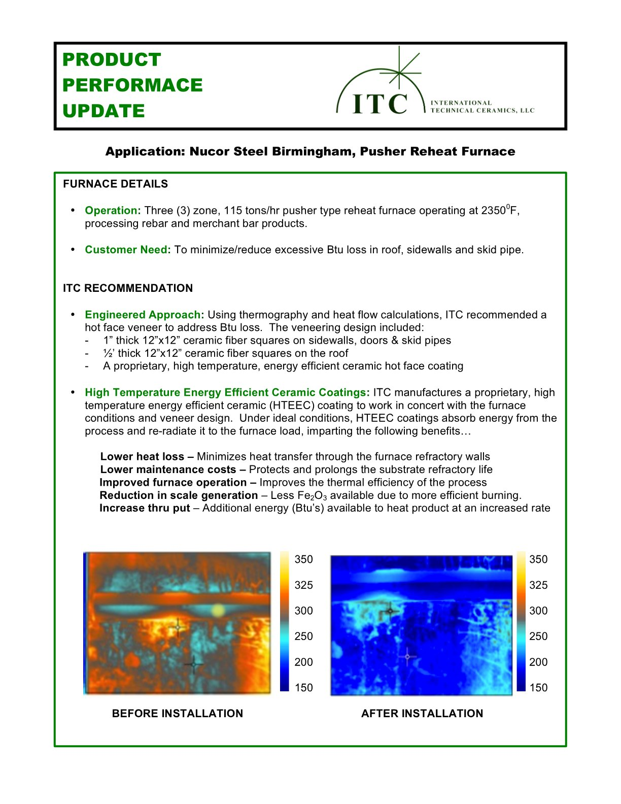

Nucor Steel Birmingham's three-zone pusher reheat furnace was losing millions of BTUs per hour through the roof, sidewalls, and skid pipes. ITC Coatings engineered a veneer and ceramic coating system that delivered $1,230,000 in annual fuel savings -- exceeding the original engineering estimates by nearly 10%.
Nucor Steel Birmingham operates a three-zone, 115-ton-per-hour pusher reheat furnace at 2,350°F, processing rebar and merchant bar products. The facility's primary concern was excessive BTU loss occurring through the roof, sidewalls, and skid pipe areas of the furnace. This heat loss translated directly into wasted natural gas and higher operating costs.
Using thermography and heat flow calculations, ITC designed a hot face veneer system tailored to each area of the furnace:
ITC's HTEEC coatings absorb energy from the furnace environment and re-radiate it back to the steel load, keeping the heat where it belongs -- inside the furnace working on the product, not escaping through the walls.

Before and after thermal imaging showing dramatic shell temperature reduction at Nucor Steel Birmingham
Before and after thermal imaging confirmed substantial improvements across the entire furnace:
| Measurement | Calculated Estimate | Actual Result |
|---|---|---|
| Original shell temperature | 300--400°F | 330--430°F |
| After veneer and coating | 250--350°F | 228--342°F |
| BTU savings | 50 MM BTU/hr | 54.7 MM BTU/hr |
The actual results exceeded the engineering calculations -- shell temperatures dropped lower than predicted, and BTU savings came in nearly 10% above estimates.
The thermal efficiencies of the veneer and coating system enabled Nucor operators to reduce furnace operating temperatures in the discharge zone, further compounding fuel savings without sacrificing product quality.
The annual fuel savings calculation:
54.77 MM BTU/hr x 24 hr/day x 208 days/yr x $4.05/MM BTU
| Annual Fuel Savings | $1,230,000 |
At $4.05 per MM BTU (the natural gas rate at time of installation), the veneer and coating system paid for itself rapidly. At today's natural gas prices, the savings would be even more significant.
The Nucor Birmingham project demonstrates several important principles:
For steel mills operating reheat furnaces -- whether pusher, walking beam, or rotary hearth -- ITC's veneer and coating systems offer one of the fastest-payback energy efficiency investments available. Contact ITC Coatings for a thermal assessment of your furnace operations.
ITC Coatings has been engineering high-temperature ceramic coating solutions for the steel industry since 1980. Our thermal engineering team uses thermography and proprietary heat flow calculations to quantify savings before installation, giving plant managers the confidence to invest. Based in San Angelo, Texas.
Ready to reduce your energy costs and extend refractory life?
Email: info@itccoatings.com
Phone: (325) 340-1304
Web: itccoatings.com